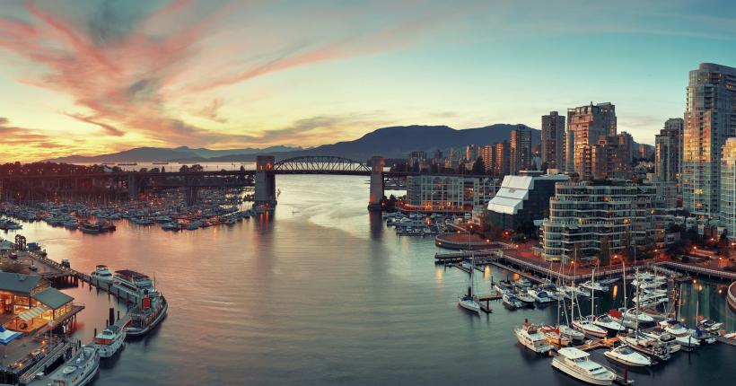
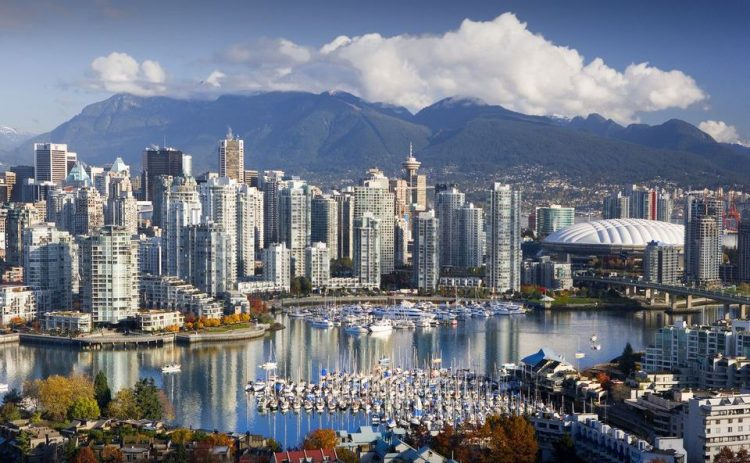
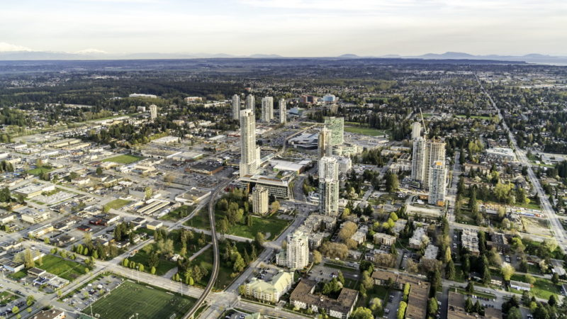
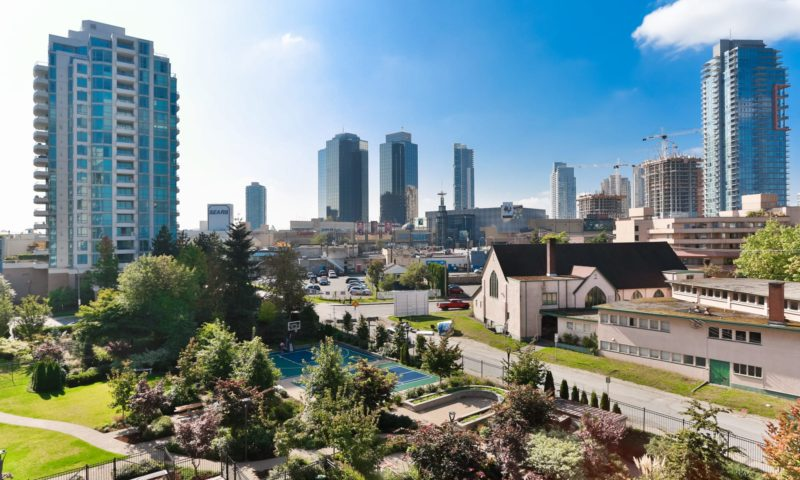
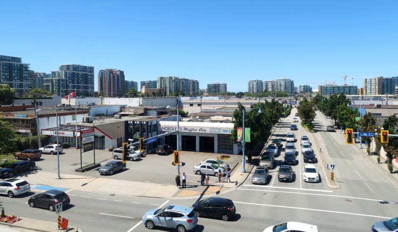
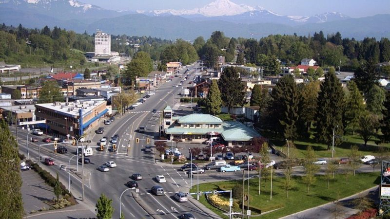

Крупнейшие города Британской Колумбии

Провинция Британская Колумбия расположена на западе Канады и граничит с Тихим океаном и Скалистыми горами. Площадь провинции 364 764 квадратных миль (944 735 кв. км) – пятая в Канаде по размеру.
Британская Колумбия является третьей по численности населения провинцией Канады. В провинции насчитывается 52 города, крупнейшими и наименьшими из которых являются Ванкувер и Гринвуд соответственно. Население Ванкувера составляет 675 586 человек, а население Гринвуда – всего 708. Абботсфорд – самый большой город в провинции по площади (375, 55 кв. км), а Дункан – самый маленький (2, 07 кв. км).
1. Ванкувер

Ванкувер – самый густонаселенный город Британской Колумбии. Это прибрежный портовый город, один из самых этнически и лингвистически разнообразных в стране. Он определен как бета-глобальный город и считается одним из лучших городов мира с точки зрения качества жизни. Лесное хозяйство и туризм являются крупнейшими отраслями промышленности.
Город также является одним из крупнейших центров кинопроизводства в Северной Америке, и поэтому его часто называют «Северный Голливуд». Кроме того, учитывая расположение на побережье Тихого океана, порт Metro Vancouver является третьим по величине портом в Северной Америке.
2. Суррей

С населением 518 467 человек в 2017 году Суррей является вторым по величине городом Британской Колумбии. Город расположен к югу от реки Фрейзер и является частью агломерации Большой Ванкувер. Суррей – один из крупнейших промышленных центров в провинции с процветающими секторами здравоохранения, образования, сельского хозяйства, экологически чистой энергетики и производства.
В городе быстрорастущий технологический сектор. Большая часть еды, потребляемой в Суррее, выращивается на месте. За счет приезжих численность населения города резко возросла и теперь продолжает увеличиваться.
3. Бернаби

Бернаби – третий по величине город Британской Колумбии с населением 252 755 человек. Город расположен к востоку от Ванкувера и является частью агломерации Большой Ванкувер. Основан в 1892 году, статус города получил в 1992, спустя сто лет после основания.
Бернаби является домом для многих технологических фирм, включая Telus и Electronic Arts. Кроме того, в городе работают компании тяжелой промышленности, такие как Petro-Canada и Chevron Corporation.
4. Ричмонд

С населением 216 288 человек (в 2017 году), Ричмонд является четвертым по величине городом Британской Колумбии. Расположенный на острове Лулу в устье реки Фрейзер, город является частью агломерации Большой Ванкувер. Многие рабочие места в Ричмонде находятся в таких секторах, как сфера услуг, розничная торговля, легкое производство, правительство и авиация. Город также стал центром высокотехнологичных и коммуникационных корпораций, включая Norsat и Sierra Wireless.
Большинство населения города составляют выходцы из Китая, Тайваня, Гонконга, Японии. Японцы – одними из первых заселили Ричмонд.
5. Абботсфорд

Абботсфорд – пятый по величине город в Британской Колумбии (население 151 928). В городе находится Университет Долины Фрейзер и международный аэропорт, в котором проходят международные авиашоу. В городе очень диверсифицированная экономика, которая ориентирована на такие отрасли, как сельское хозяйство, розничная торговля, производство и транспорт.
Столица Британской Колумбии - Виктория
Виктория – столица провинции Британская Колумбия и расположена на южной части острова Ванкувер. Однако, город не входит в число 10 самых густонаселенных городов провинции. Население – 85,792 чел. Виктория считается самым «британским» по духу городом Канады, этой репутации способствует большое число англичан-пенсионеров, перебравшихся в этот самый тёплый по климату город страны. Гостей Виктории прежде всего поражает обилие цветов.